<nav>
  <ul class="tab-wrapper" [ngClass]="isTabVisible ? 'tabsVisible' : 'tabsHidden'">
    <li routerLink="/photos" routerLinkActive="active">Photos</li>
    <li routerLink="/favorites" routerLinkActive="active">Favorites</li>
  </ul>
  
</nav>